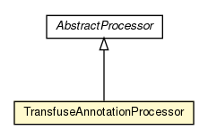

org.androidtransfuse
Class TransfuseAnnotationProcessor

java.lang.Object
 javax.annotation.processing.AbstractProcessor
org.androidtransfuse.AnnotationProcessorBase
org.androidtransfuse.TransfuseAnnotationProcessor
javax.annotation.processing.AbstractProcessor
org.androidtransfuse.AnnotationProcessorBase
org.androidtransfuse.TransfuseAnnotationProcessor
- All Implemented Interfaces:
- Processor
@SupportedSourceVersion(value=RELEASE_6)
public class TransfuseAnnotationProcessor
- extends AnnotationProcessorBase
Transfuse Annotation processor. Kicks off the process of analyzing and generating code based on the compiled
codebase.
To use this class, you simply have to annotate your classes with the proper root components (Activity,
Application, etc) and have this annotation processor on the classpath during a full compilation.
This approach is compatible with Java 6 and above.
See http://androidtransfuse.org for more details
- Author:
- John Ericksen
| Methods inherited from class java.lang.Object |
clone, equals, finalize, getClass, hashCode, notify, notifyAll, toString, wait, wait, wait |
TransfuseAnnotationProcessor
public TransfuseAnnotationProcessor()
init
public void init(ProcessingEnvironment processingEnv)
- Specified by:
init in interface Processor- Overrides:
init in class AbstractProcessor
process
public boolean process(Set<? extends TypeElement> typeElements,
RoundEnvironment roundEnvironment)
- Specified by:
process in interface Processor- Specified by:
process in class AbstractProcessor
Copyright © 2013. All Rights Reserved.